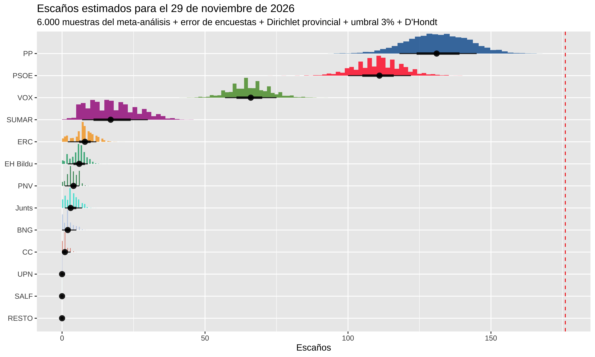
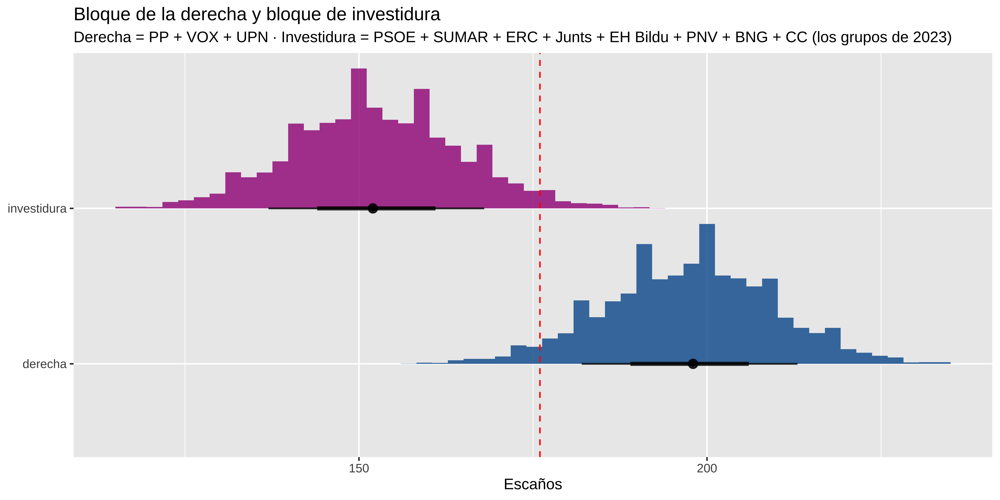

Show the code
library(tidyverse)
library(DT)
library(brms)
library(tidybayes)
source(here::here("2026/10/preparar_meta.R"))Ya hice metaanálisis antes. en las generales de julio de 2023, para las europeas de junio de 2024
Ahora toca hacrlos para las elecciones del próximo 29 de noviembre de 2026
Las anteriores veces había hecho un meta-análisis para obtener estimaciones de porcentaje de voto, teniendo en cuenta el efecto de la casa encuestadora como efecto aleatorio y el tiempo hasta el día de las elecciones como efecto fijo.
En las andaluzas de mayo de 2026 añadí una estimación bayesiana de escaños. Teniendo solo el agregado de encuestas a nivel de Andalucía, tuve que hacer una asunción sobre como se distribuye el voto a nivel provincial. Quiero hacer lo mismo para las generales, pero aparte del problema de no tener el voto por provincias, no se informa siquiera por comunidad autónoma (recordemos que lo que usamos es el resultado que publican las casas encuestadoras, no los microdatos).
Y por si fuera poco, en la mayoría de las encuestas sólo se informa de la estimación de los principales partidos, obviando los regionales (PNV, BNG, Junts, etc.), y tener una estimación de estos partidos es necesario para hacer una estimación provincial medianamente coherente.
Así que vamos a hacer 4 pasos.
Agregamos encuestas a nivel nacional
Rescatamos los regionales en las encuestas en las que venga informado, o leyendo los enlaces a los medios en dónde se publican los resultados detallados.
Modelamos las series con brms: dos modelos, uno para los principales partidos y otro para modelar los partidos regionales solamente.
Traducimos voto a escaños provincia por provincia, con umbral del 3% y D’Hondt.
Todo este ejercicio es incompleto. En el paso 4 añado una capa de error histórico agregado —cómo se equivocan las encuestas en bloque el día de la votación—, pero lo que de verdad haría falta es calibrar por empresa encuestadora: es posible que una casa se equivoque siempre a favor de los mismos, y eso el meta-análisis no lo puede ver. Esa calibración por casa queda pendiente.
La fuente principal es la tabla de encuestas de ciento76 las descargo con (descargar_encuestas_ciento76.R). Y luego un mínimo tratamiento para construir el dataset que voy a utilzar. (preparar_meta.R)
library(tidyverse)
library(DT)
library(brms)
library(tidybayes)
source(here::here("2026/10/preparar_meta.R"))enc <- read_csv(
here::here("./encuestas_con_partidos_regionales.csv"),
show_col_types = FALSE
) |>
mutate(fecha = parse_fecha_campo(Campo)) |>
filter(!is.na(fecha), fecha >= fecha_inicio_grande)
enc |>
select(
Encuestadora,
Campo,
PP,
PSOE,
VOX,
Sumar,
Podemos,
SALF,
Junts,
ERC,
PNV,
`EH Bildu`,
BNG,
CC,
UPN,
regionales_completos
) |>
datatable(options = list(scrollX = TRUE))Añadí columna regionales_completos: es FALSE en la mayoría. Salvo para algunas en las que pude obtener estimaciones regionales.
Vale, si tuviera datos de estimaciones de partidos regionales en la mayoría de las encuestas podría plantearme un modelo multinomial con 13 categorías (los 5 grandes + SALF + 7 regionales + resto). Pero como no es así, propongo hacer dos modelos en cascada.
En la simulación, cada muestra del posterior del modelo 1 fija el tamaño del BLOQUE y se reparte con la composición del modelo 2. Resultado: 13 valores que suman 100 con la distribución conservada.
Para el modelo 1 he quitado encuestas del CIS (su cocina electoral es muy distinta y se necesitaría corregir el sesgo por recuerdo de voto que el CIS decidió no hacerlo) y las del electopanel (que si se utilizan para el modelo 2 por ser de las pocas que dan estimaciones de partidos regionales). Otra decisión que he tomado es considerar solo las encuestas desde el 1 de julio de 2026 en adelante
Update: A 11 de Octubre de 2026, estoy usando sólo 40 encuestas para el modelo 1, conforme se vaya acercando las fechas de las elecciones iré añadiendo más (el script de descarga está preparado para eso)
meta_g <- read_csv(
here::here("2026/10/encuestas_meta_grande.csv"),
show_col_types = FALSE
)
meta_b <- read_csv(
here::here("2026/10/encuestas_meta_bloque.csv"),
show_col_types = FALSE
)
cat("Modelo 1:", n_distinct(meta_g$encuestadora, meta_g$campo), "encuestas\n")
#> Modelo 1: 40 encuestas
cat("Modelo 2:", n_distinct(meta_b$encuestadora, meta_b$campo), "encuestas\n")
#> Modelo 2: 68 encuestasLa parte menos obvia del invento es cómo se pegan los dos modelos, aunque en realidad es sencilla.
Qué entrena el modelo 2. Es un multinomial condicional: el trials de su fórmula no es la muestra completa de la encuesta, sino los votos totales del BLOQUE en esa encuesta. Por ejemplo, una encuesta con n = 1.000 y un bloque del 11% entra al modelo 2 como 110 votos repartidos en 8 celdas:
# una encuesta con n = 1.000 y BLOQUE = 11% entra al modelo 2 así:
encuesta <- c(
ERC = 42,
Junts = 18,
PNV = 13,
EH_Bildu = 15,
BNG = 8,
CC = 5,
UPN = 2,
RESTO = 7
)
sum(encuesta) # <- el trials del modelo 2: los votos del bloque, no la muestra
#> [1] 110El modelo 2 ni sabe ni le importa cuánto pesa el bloque: solo aprende en qué proporción se reparte dentro de él (y cómo deriva con el tiempo). El peso del bloque lo estima el modelo 1, que ve muchas más encuestas. Una muestra del modelo 2 es, a efectos prácticos, un vector de proporciones condicionales como este:
c2 <- encuesta / sum(encuesta)
round(c2, 2)
#> ERC Junts PNV EH_Bildu BNG CC UPN RESTO
#> 0.38 0.16 0.12 0.14 0.07 0.05 0.02 0.06Cómo se pegan. En la simulación, cada muestra del modelo 1 aporta el tamaño del BLOQUE y una muestra del modelo 2 aporta su composición interna. Se multiplican y punto:
# una muestra (inventada) del modelo 1: los 6 grandes
d1 <- c(
PP = 32.6,
PSOE = 27.1,
VOX = 19.2,
SUMAR = 8.0,
SALF = 1.8,
BLOQUE = 11.3
)
bloque <- unname(d1["BLOQUE"])
draw13 <- c(d1[1:5], bloque * c2)
round(draw13, 1)
#> PP PSOE VOX SUMAR SALF ERC Junts PNV
#> 32.6 27.1 19.2 8.0 1.8 4.3 1.8 1.3
#> EH_Bildu BNG CC UPN RESTO
#> 1.5 0.8 0.5 0.2 0.7
sum(draw13)
#> [1] 100Las muestras de los dos modelos se generan por separado y se emparejan por índice: se asume que el tamaño del bloque y su composición interna no están correlacionadas. Un modelo único de 13 categorías las acoplaría si en la realidad lo estuvieran, pero es justo lo que no podemos ajustar: solo pocas encuestas reportan las 13 categorías y casi todas de la misma casa (electopanel). Hacerlo en dos modelos divide el problema en 2, puede que no sea lo más estadísticamente correcto, pero es práctico.
Mi primer intento tenía 185 encuestas para agregar y pensé que no tenía sentido añadir encuestas de hace 2 años. Pero el principal problema es que el ElectoPanel tenía mucho peso
| Ventana | M1 (encuestas, casas) | M2 (encuestas, casas) | % ElectoPanel M1 / M2 |
|---|---|---|---|
| Todo (jun 25 →) | 185, 22 | 68, 7 | 38% / 84% |
| Desde jul 2026 | 40, 16 | 14, 7 | 35% / 43% |
ElectoPanel es un panel continuo de electomanía con releases muy frecuentes: sus 71 encuestas no son 71 informaciones independientes. Y en el modelo 2 (el del bloque de otros) era el 84% del dataset, porque casi es la única casa que reporta los regionales de forma sistemática.
Así que tomé una decisión que puede ser discutible.
ElectoPanel queda fuera del modelo 1, donde sobran encuestas de otras casas y un panel con un tercio del peso solo metería inercia. En el modelo 2 se queda, porque sin él la composición del bloque se estimaría con un puñado de encuestas.
Del modelo 1 también sale el CIS: Quizá lo meta más tarde, si hago una estimación propia partiendo de sus microdatos. Los microdatos no se redistribuyen — cómo descargarlos y de qué estudios, en la release del repo.
Además, en octubre y noviembre habrá una oleada de encuestas y seguramente estas captarán mejor los cambios que se puedan producir entre el electorado. La idea es irlas incorporando y reajustar los modelos. Iré actualizando el post
Todo el ajuste del modelo 1 vive en ajustar_grande() (en ajustar_meta.R).
Los datos. Cada encuesta se convierte en conteos: el porcentaje de cada una de las 6 categorías por el tamaño muestral publicado, redondeado. Una encuesta de 1.000 entrevistas con el PP al 33% aporta 330 “votos” al PP. Es una decisión útil, para modelar el multinomial como conteo, además de esta forma las encuestas con mayor n pesan más. Si, ya sé que hay un montón de decisiones en cada empresa encuestadora, estimación de la participación, la postestratificación, imputación de voto, etcétera, pero es lo que tenemos.
El modelo. Un multinomial con el PP como categoría de referencia (se podría quitar y que no hubiera una categoría de referencia, pero sería un modelo matemáticamente equivalente ). Para cada una de las otras cinco categorías \(k\) (PSOE, VOX, SUMAR, SALF y BLOQUE), el log-odds frente al PP en la encuesta \(i\), hecha por la casa \(h\), es:
\[ \log \frac{\pi_{k,i}}{\pi_{PP,i}} = \alpha_k + \beta_k \, t_i + u_{k,h}, \qquad u_{k,h} \sim \mathcal{N}(0, \sigma_k) \]
¿Qué implica la referencia?: el PP no tiene ecuación propia (su \(\alpha\), \(\beta\) y \(u\) valen 0), así que \(\alpha_k\) y \(\beta_k\) no describen la evolución de la categoría \(k\) a secas, sino su diferencia con el PP.
Los priors son Normal(0, 2) —en desviación típica— para \(\alpha_k\) y \(\beta_k\) y Exponential(1) para \(\sigma_k\), todo en la escala log-odds. Para \(\beta_k\), una pendiente por día, Normal(0, 2) es prácticamente plano: una dinámica de campaña creíble se mueve en centésimas de log-odds al día (una pendiente de 2 multiplicaría el cociente frente al PP por \(e^2\) en un solo día), así que el prior no frena nada y mandan los datos.
Para \(\alpha_k\) es débilmente informativo: \(\alpha_k = 2\) significaría que la categoría \(k\) vale \(e^2 \approx 7\) veces el PP, de sobra para cualquier partido español. Y \(\sigma_k\) es cuánto se dispersan las casas en ese log-odds: la Exponential(1) acumula probabilidad cerca de 0 pero deja cola para casas con sesgos de hasta un log-odds, un factor de casi \(e\) frente al PP.
Asunciones. Los efectos casa están centrados en 0, así que el modelo estima la media de las encuestadoras, no el resultado real. Si todas se equivocan en la misma dirección, no tiene forma de verlo. La corrección de verdad sería calibrar por casa con elecciones pasadas; lo que hago en el paso 4 es una versión tosca: un error agregado del conjunto de encuestas, estimado con solo cinco generales, ains..
Cambio respecto a Andalucía. Allí el efecto casa era (time | encuestadora): cada casa con su propia deriva temporal. Con una ventana de tres meses y la mayoría de casas con una o dos encuestas, esa pendiente por casa no se puede aprender, y en una comparación con conjunto de validación las dos estructuras predecían igual. Me quedo con la más simple.
El muestreo. 4 cadenas de 4.000 iteraciones (1.000 de warmup) con cmdstanr, 12.000 muestras del posterior en total. Ajustar un modelo en Stan a veces puede ser complicado, algunas cosas que tuve que cambiar fue añadir init = 0 , adapt_delta = 0.95 y max_treedepth = 12
El modelo se reajusta en cada render (refit = TRUE) porque iré metiendo encuestas conforme avance el mes.
Todo el código del ajuste —los dos modelos, los priors y el muestreo— está en ajustar_meta.R.
source(here::here("2026/10/ajustar_meta.R"))El modelo en realidad es muy sencillo, modela el vector de votos de cada encuesta, digamos un (20,34,200, 30,20,30) indicando que el n para esta encuesta sería 334 y en función de la fecha de campo de la encuesta y el efecto aleatorio de la empresa encuestadora.
cell_counts | trials(n) ~ time + (1 | encuestadora)
# mod_g <- ajustar_grande()
mod_g <- ajustar_grande(refit = TRUE)
#> Fuera (sin n publicado): 1 encuestas — InvyMark
#> Fuera (casas_fuera: CIS, ElectoPanel ): 16 encuestas
#> Running MCMC with 4 parallel chains...
#>
#> Chain 4 finished in 13.8 seconds.
#> Chain 2 finished in 14.7 seconds.
#> Chain 1 finished in 15.1 seconds.
#> Chain 3 finished in 15.4 seconds.
#>
#> All 4 chains finished successfully.
#> Mean chain execution time: 14.8 seconds.
#> Total execution time: 15.5 seconds.
formula(mod_g)
#> cell_counts | trials(n) ~ time + (1 | encuestadora)El resumen del modelo sería
summary(mod_g)
#> Family: multinomial
#> Links: muPSOE = logit; muVOX = logit; muSUMAR = logit; muSALF = logit; muBLOQUE = logit
#> Formula: cell_counts | trials(n) ~ time + (1 | encuestadora)
#> Data: dat (Number of observations: 23)
#> Draws: 4 chains, each with iter = 4000; warmup = 1000; thin = 1;
#> total post-warmup draws = 12000
#>
#> Multilevel Hyperparameters:
#> ~encuestadora (Number of levels: 14)
#> Estimate Est.Error l-95% CI u-95% CI Rhat Bulk_ESS
#> sd(muPSOE_Intercept) 0.03 0.02 0.00 0.08 1.00 3997
#> sd(muVOX_Intercept) 0.05 0.03 0.01 0.12 1.00 3515
#> sd(muSUMAR_Intercept) 0.10 0.04 0.04 0.19 1.00 4711
#> sd(muSALF_Intercept) 0.25 0.08 0.11 0.43 1.00 4582
#> sd(muBLOQUE_Intercept) 0.07 0.04 0.01 0.15 1.00 3170
#> Tail_ESS
#> sd(muPSOE_Intercept) 4426
#> sd(muVOX_Intercept) 4112
#> sd(muSUMAR_Intercept) 4972
#> sd(muSALF_Intercept) 6833
#> sd(muBLOQUE_Intercept) 4232
#>
#> Regression Coefficients:
#> Estimate Est.Error l-95% CI u-95% CI Rhat Bulk_ESS Tail_ESS
#> muPSOE_Intercept -0.20 0.04 -0.28 -0.12 1.00 11623 10962
#> muVOX_Intercept -0.62 0.05 -0.71 -0.53 1.00 10769 10839
#> muSUMAR_Intercept -1.19 0.06 -1.32 -1.07 1.00 9847 10114
#> muSALF_Intercept -2.80 0.14 -3.07 -2.54 1.00 8362 8571
#> muBLOQUE_Intercept -0.96 0.05 -1.07 -0.85 1.00 10047 9985
#> muPSOE_time -0.00 0.00 -0.00 0.00 1.00 12153 10890
#> muVOX_time 0.00 0.00 -0.00 0.00 1.00 12664 10986
#> muSUMAR_time -0.00 0.00 -0.00 0.00 1.00 12622 10817
#> muSALF_time -0.00 0.00 -0.00 0.00 1.00 15026 10377
#> muBLOQUE_time -0.00 0.00 -0.00 0.00 1.00 12456 11209
#>
#> Draws were sampled using sample(hmc). For each parameter, Bulk_ESS
#> and Tail_ESS are effective sample size measures, and Rhat is the potential
#> scale reduction factor on split chains (at convergence, Rhat = 1).Poniendo en una tabla los mu estimados
s <- summary(mod_g)
# diagnósticos para el texto: efectos fijos + sd de los efectos casa
conv <- rbind(s$fixed, s$random$encuestadora)
rhat_max <- max(conv$Rhat)
ess_min <- min(conv$Bulk_ESS, conv$Tail_ESS)
n_div <- sum(subset(nuts_params(mod_g), Parameter == "divergent__")$Value)
as.data.frame(s$fixed) |>
tibble::rownames_to_column("param") |>
select(param, Estimate, Est.Error, Rhat, Bulk_ESS, Tail_ESS) |>
mutate(across(where(is.numeric), \(x) round(x, 3)))
#> param Estimate Est.Error Rhat Bulk_ESS Tail_ESS
#> 1 muPSOE_Intercept -0.199 0.039 1.000 11623.410 10962.117
#> 2 muVOX_Intercept -0.615 0.046 1.000 10768.731 10838.542
#> 3 muSUMAR_Intercept -1.194 0.065 1.000 9847.395 10113.709
#> 4 muSALF_Intercept -2.797 0.135 1.001 8362.312 8571.448
#> 5 muBLOQUE_Intercept -0.957 0.054 1.000 10046.910 9985.429
#> 6 muPSOE_time 0.000 0.001 1.000 12153.204 10889.581
#> 7 muVOX_time 0.001 0.001 1.000 12663.919 10986.419
#> 8 muSUMAR_time -0.001 0.001 1.000 12622.473 10816.876
#> 9 muSALF_time -0.002 0.002 1.000 15026.216 10377.088
#> 10 muBLOQUE_time -0.001 0.001 1.000 12455.726 11209.066Convergencia: Rhat máximo de 1.002, ESS mínimo de 3170 y 0 transiciones divergentes, contando también las desviaciones típicas de los efectos casa, que son las que peor mezclan.
Las pendientes de time vienen en escala de cambio por día, por eso son valores muy pequeños. Si lo vemos por ejemplo el cambio desde fecha inicial (julio de 2026) hasta hoy, podemos ver el cambio en tendencia de cada partido que el modelo ve para cada partido.
fecha_hoy <- Sys.Date()
dias_e <- as.numeric(as.Date("2026-11-29") - fecha_hoy)
pred_tend <- bind_rows(
tibble(
time = as.numeric(fecha_hoy - as.Date("2026-07-01")),
etiqueta = "hoy",
n = 1
),
tibble(
time = as.numeric(as.Date("2026-11-29") - as.Date("2026-07-01")),
etiqueta = "diaE",
n = 1
)
) |>
add_epred_draws(mod_g, ndraws = 4000, re_formula = NA) |>
ungroup() |>
mutate(.epred = .epred * 100)
tendencia <- pred_tend |>
select(.draw, .category, etiqueta, .epred) |>
pivot_wider(names_from = etiqueta, values_from = .epred) |>
mutate(cambio_pp = diaE - hoy) |>
group_by(.category) |>
median_qi(cambio_pp) |>
rename(
partido = .category,
cambio = cambio_pp,
ic_low = .lower,
ic_high = .upper
)
# intervalos al 95% que no cruzan el 0 (cambios "fiables")
n_signif <- sum(tendencia$ic_low > 0 | tendencia$ic_high < 0)
tendencia |>
mutate(across(where(is.numeric), \(x) round(x, 2)))
#> # A tibble: 6 × 7
#> partido cambio ic_low ic_high .width .point .interval
#> <fct> <dbl> <dbl> <dbl> <dbl> <chr> <chr>
#> 1 PP 0.11 -0.74 1.03 0.95 median qi
#> 2 PSOE 0.04 -0.8 0.98 0.95 median qi
#> 3 VOX 0.63 -0.17 1.54 0.95 median qi
#> 4 SUMAR -0.33 -0.88 0.3 0.95 median qi
#> 5 SALF -0.12 -0.31 0.16 0.95 median qi
#> 6 BLOQUE -0.39 -0.96 0.28 0.95 median qiEl cambio mediano más grande entre hoy y el día E es de 0.6 puntos y ningún intervalo al 95% se separa del 0: el modelo ve una carrera plana desde julio. O sea, que PP, PSOE y demás están (según las encuestas) donde estaban en verano.
Evaluamos el modelo en el time de la fecha electoral con los efectos casa en su media (re_formula = NA): lo que el modelo sabe decir es dónde estaría la media de las encuestadoras ese día, y la distancia hasta el resultado real la pone la capa de error histórico del paso 4.
Podríamos haber considerado que el día de las elecciones era como una encuesta más hecha por una empresa nueva, y habríamos usado allow_new_levels, pero añadiría incertidumbre. Poniendo re_formula = NA asumimos que el sesgo de unas empresas se compensan con las de otras. Puede no ser así, pero para eso habría que analizar el error histórico por empresa (que no hago),más adelante vemos error histórico de las encuestas en general.
time_e <- as.numeric(as.Date("2026-11-29") - as.Date("2026-07-01"))
estimaciones <- tibble(
time = time_e,
n = 1
) |>
add_epred_draws(mod_g, ndraws = 4000, re_formula = NA) |>
rename(partido = .category, estim = .epred) |>
ungroup() |>
mutate(estim = estim * 100)
estimaciones |>
group_by(partido) |>
summarise(
mediana = median(estim),
low = quantile(estim, 0.05),
high = quantile(estim, 0.95)
) |>
mutate(across(mediana:high, \(x) round(x, 2)))
#> # A tibble: 6 × 4
#> partido mediana low high
#> <fct> <dbl> <dbl> <dbl>
#> 1 PP 32.6 31.1 34.1
#> 2 PSOE 26.6 25.1 28.1
#> 3 VOX 19.3 18.0 20.8
#> 4 SUMAR 8.71 7.76 9.83
#> 5 SALF 1.56 1.19 2.04
#> 6 BLOQUE 11.2 10.1 12.3colores <- c(
"PP" = "#005999",
"PSOE" = "#FF0126",
"VOX" = "#51962A",
"SUMAR" = "#A00B85",
"SALF" = "#00C3B6",
"BLOQUE" = "grey50"
)
# me quito el "OTROS"
estimaciones |>
filter(partido != "BLOQUE") |>
ggplot(aes(x = estim, fill = partido)) +
geom_density(alpha = 0.5) +
scale_fill_manual(values = colores) +
labs(
title = "Meta-análisis generales 2026. Estimación día de las elecciones",
subtitle = paste0(
"Modelo 1: ",
nrow(mod_g$data),
" encuestas, ",
n_distinct(mod_g$data$encuestadora),
" casas, ventana jul-oct 2026"
),
x = "Porcentaje estimado",
y = "Densidad"
)
Vamos a la parte chunga, como el título de la canción de Tabletom que he puesto al principio.
En España los escaños se reparten provincia a provincia con D’Hondt, con un umbral legal del 3% de los votos válidos de cada circunscripción (LOREG art. 163), y Ceuta y Melilla eligen un diputado cada una por mayoría simple. Todo el tinglado —distribución provincial, ruido Dirichlet, umbral del 3% y D’Hondt— vive en simular_escanos.R.
Mismo truco que en Andalucía, pero con referencia del 23J: si en 2023 ERC sacó en Barcelona un 6.5 veces su media nacional, asumo que ese desvío se mantiene. Formalmente:
\[\tilde{\pi}_{k,p} = \pi_k \cdot r_{k,p}, \qquad r_{k,p} = \frac{\pi^{23J}_{k,p}}{\pi^{23J}_{k}}\]
y luego normalizo dentro de cada provincia. El que tenga una idea mejor, que lo comenté en el blog o me escriba.
El caso SALF: “Se Acabó La Fiesta” se registró en 2024, así que en el 23J no existía. No hay manera de sacar su geografía de esa referencia. Su patrón provincial lo tomo de las Europeas de junio de 2024, su única cita con las urnas. 803.545 votos y 3 escaños, que en el Congreso se reparten muy mal para un partido así.
Si aplicara los ratios del 23J tal cual, la geografía de 2026 sería un calco exacto de la de 2023 y toda la incertidumbre de los escaños vendría del voto nacional. No me lo creo: así que añadimos un poquito de ruido.
El desvío de Granada respecto a la media no va a ser exactamente el mismo. Así que en cada muestra de la simulación cada provincia usa unos ratios ligeramente distintos, muestreados alrededor de los del 23J. Veamos cómo con Granada (7 diputados).
Esto es lo que la referencia guarda para Granada (solo los partidos que se presentan allí):
source(here::here("2026/10/simular_escanos.R"))
ref13 |>
filter(provincia == "Granada", ratio > 0) |>
select(partido, votos, pct_prov, pct_nac, ratio) |>
arrange(desc(pct_prov)) |>
mutate(across(where(is.double), \(x) round(x, 2)))
#> # A tibble: 6 × 5
#> partido votos pct_prov pct_nac ratio
#> <chr> <dbl> <dbl> <dbl> <dbl>
#> 1 PP 185996 37.3 33.3 1.12
#> 2 PSOE 165862 33.2 31.9 1.04
#> 3 VOX 81080 16.3 12.5 1.3
#> 4 SUMAR 58567 11.7 12.4 0.94
#> 5 SALF 20674 6.02 4.62 1.3
#> 6 RESTO 7283 1.46 2.48 0.59El PP sacó en Granada un 37.3% frente al 33.3% nacional: ratio 1.12. VOX, un 16.3 frente a un 12.5: ratio 1.30. Si una muestra del posterior da al PP un 32.6% nacional, Granada le asigna de partida 32.6 × 1.12 ≈ 36.5% (antes de normalizar la provincia para que sume 100). Los regionales no aparecen porque su ratio en Granada es 0: ERC no se presenta allí, y siguen a 0 en cualquier muestra.
La idea: volver a votar el 23J en Granada, pero con una muestra de unos 500 “votantes”. El ratio es un cociente, el porcentaje provincial entre el porcentaje nacional, y el ruido solo toca el numerador. En cada muestra sustituyo los porcentajes de voto provinciales del 23J por unos “re-sorteados”, los que saldrían si se repitiera aquella elección en Granada con una muestra de ~500 personas en lugar de los ~520.000 votantes reales. Ese re-sorteo es una Dirichlet centrada en los porcentajes del 23J y con concentración igual a los votos totales de la provincia entre 1.000:
\[ \boldsymbol{\pi}^{(s)}_p \sim \text{Dirichlet}\left(\frac{V_p}{1000}\,\boldsymbol{\pi}^{23J}_p\right), \qquad r^{(s)}_{k,p} = r_{k,p} \cdot \frac{\pi^{(s)}_{k,p}}{\pi^{23J}_{k,p}} \]
donde \(V_p\) son los votos de la provincia. El “500” sale de ahí: una Dirichlet con concentración total \(a\) se comporta, en dispersión, como los porcentajes de una muestra con \(a\) encuestados, y Granada tuvo unos 520.000 votos: \(520.000 / 1.000 \approx 520\). En esperanza la Dirichlet devuelve los porcentajes del 23J, así que en media el ratio no cambia: lo único que añade es dispersión. ¿Y por qué dividir entre 1.000 en lugar de usar los votos reales? Porque con la concentración real la geografía de 2026 sería un calco exacto del 23J, justo lo que no me creo; el 1.000 es el punto donde el ruido queda en algo razonable — un partido al 37% en la provincia se mueve unos ±2 puntos entre muestras, del orden del error muestral de una encuesta provincial. Es un número que fijo yo (heredado del post de Andalucía), no un número que salga de los datos. Cinco muestras para Granada:
granada <- prov_datos |> filter(codigo_provincia == 18)
set.seed(6137)
d <- gtools::rdirichlet(5, granada$alpha13[[1]])
ratios <- t(granada$ratio13[[1]] * t(d) / granada$pct23[[1]])
tibble(partido = fams13, ratio_23j = granada$ratio13[[1]]) |>
bind_cols(as_tibble(t(ratios), .name_repair = \(x) {
paste0("muestra_", 1:5)
})) |>
filter(ratio_23j > 0) |>
mutate(across(where(is.double), \(x) round(x, 2)))
#> # A tibble: 6 × 7
#> partido ratio_23j muestra_1 muestra_2 muestra_3 muestra_4 muestra_5
#> <chr> <dbl> <dbl> <dbl> <dbl> <dbl> <dbl>
#> 1 PP 1.12 1.02 1.15 1.21 1.11 1.18
#> 2 PSOE 1.04 1.12 1.06 1.04 1.01 1.11
#> 3 VOX 1.3 1 0.98 1.22 1.39 1.3
#> 4 SUMAR 0.94 1.2 1.14 0.84 1.05 0.66
#> 5 SALF 1.3 1.35 1.26 1.16 1.09 1.23
#> 6 RESTO 0.59 1 0.7 0.58 0.5 0.52Cada columna es una distribución posible de los ratios de cada partido en Granada respecto de lo nacional. El PP oscila entre 1.02 y 1.21 alrededor de su 1.12; SUMAR, entre 0.66 y 1.20 alrededor de 0.94. Los partidos pequeños se mueven más en términos relativos (RESTO llega a 1.00 desde 0.59), igual que en una encuesta pequeña el error relativo es mayor para los partidos con poco voto.
¿Por qué la concentración depende de los votos de la provincia? Básicamente, a mayor población que vota en una provincia, más nos fiamos de su deriva respecto de lo nacional. Es una hipótesis, si Granada fue más de derechas en 2023 que el conjunto de España pues supongo que sigue siendo así.
El PP tiene el mismo ratio en Granada y en Soria, pero no la misma dispersión:
ruido_ratio <- function(prov, partido = "PP", n = 5000) {
pd <- prov_datos |>
filter(
codigo_provincia == prov_ref$codigo_provincia[prov_ref$provincia == prov]
)
i <- match(partido, fams13)
d <- gtools::rdirichlet(n, pd$alpha13[[1]])
r <- pd$ratio13[[1]][i] * d[, i] / pd$pct23[[1]][i]
tibble(
provincia = prov,
diputados = pd$escanos,
votantes_equivalentes = sum(pd$alpha13[[1]]),
ratio_23j = pd$ratio13[[1]][i],
media = mean(r),
sd = sd(r)
)
}
set.seed(6137)
bind_rows(ruido_ratio("Granada"), ruido_ratio("Soria")) |>
mutate(across(where(is.double), \(x) round(x, 2)))
#> # A tibble: 2 × 6
#> provincia diputados votantes_equivalentes ratio_23j media sd
#> <chr> <dbl> <dbl> <dbl> <dbl> <dbl>
#> 1 Granada 7 519. 1.12 1.12 0.07
#> 2 Soria 2 51.6 1.12 1.12 0.2Las dos provincias están centradas en 1.12, pero Granada (unos 520 “votantes equivalentes”) tiene una desviación típica de 0.07 y Soria (unos 52) de 0.20, unas tres veces más, como corresponde a una muestra diez veces menor. Y es en las provincias pequeñas, donde reparten 2 o 3 escaños, donde ese ruido decide si un partido entra o se queda fuera.
Decisiones que he tomado yo de forma digital (con el dedo):
En este apartado es dónde tengo bastantes dudas de lo que he hecho. Creo que necesita ser más trabajado. La idea es que puede que las encuestas hayan subestimado o sobreestimado a algún partido en particular de forma sistemática, y corregir en cierta forma ese sesgo.
Para cada elección pasada, comparo el resultado real con la media de las encuestas cuyo trabajo de campo terminó en los últimos días de campaña — 124 encuestas de las cinco últimas generales, sacadas de los anexos de sondeos de Wikipedia (con su fecha de fin de campo, que en esas tablas viene en rangos tipo “15–19 Abr”) y congeladas en errores_encuestas_historicas.csv. Quedan fuera los sondeos internos de partidos que también publican los anexos: no son estimaciones públicas, Para el PSOE sale esto:
errores_hist <- read_csv(
here::here("2026/10/errores_encuestas_historicas.csv"),
show_col_types = FALSE
)
etiquetas <- c(
`20d` = "20D-2015",
`26j` = "26J-2016",
`28a` = "28A-2019",
`10n` = "10N-2019",
`23j` = "23J-2023"
)
errores_hist |>
group_by(eleccion) |>
summarise(encuesta = mean(PSOE), error = mean(e_PSOE), .groups = "drop") |>
mutate(real = encuesta + error) |>
arrange(match(eleccion, names(etiquetas))) |>
mutate(eleccion = etiquetas[eleccion]) |>
relocate(eleccion, encuesta, real, error) |>
mutate(across(where(is.numeric), \(x) round(x, 2))) |>
rename(Elección = eleccion, Encuestas = encuesta, Real = real, Error = error)
#> # A tibble: 5 × 4
#> Elección Encuestas Real Error
#> <chr> <dbl> <dbl> <dbl>
#> 1 20D-2015 21.1 22.0 0.94
#> 2 26J-2016 21.2 22.6 1.37
#> 3 28A-2019 28.8 28.7 -0.09
#> 4 10N-2019 27.1 28 0.89
#> 5 23J-2023 28.2 31.7 3.49Positivo en cuatro de las cinco (el 28A-2019 queda en un ±0). Por lo que he visto, de los cuatro partidos principales, el único cuyo sesgo es consistente es el PSOE (+1.3 puntos: positivo en 4 de 5 elecciones, y sigue en +1.3 si excluyo el 26J, que solo tiene 2 encuestas).
Para PP, VOX y Sumar el mu cambia de signo según qué elecciones entren, así que lo pongo a 0. A cada muestra del posterior se le suma, pues, un error con media +1.3 para el PSOE y 0 para el resto, una desviación típica por partido (entre 1.3 y 2.6 puntos) y una correlación PP–VOX de +0.5.
El BLOQUE de otros absorbe la diferencia para que los porcentajes sigan sumando 100, y SALF se queda fuera: no existía antes de 2024 y no tiene historia.
La capa, en números. Con cada muestra del posterior se sortea un vector de errores \(\boldsymbol{\varepsilon}\) de una normal multivariante y se le suma a los porcentajes:
\[ \boldsymbol{\varepsilon} \sim \mathcal{N}(\boldsymbol{\mu}, \boldsymbol{\Sigma}), \qquad \pi_k \leftarrow \pi_k + \varepsilon_k, \qquad \pi_{BLOQUE} \leftarrow \pi_{BLOQUE} - \sum_k \varepsilon_k \]
# la capa de error tal como vive en simular_escanos.R
tibble(partido = names(error_mu), mu = error_mu, sigma = error_sigma)
#> # A tibble: 5 × 3
#> partido mu sigma
#> <chr> <dbl> <dbl>
#> 1 PP 0 2.57
#> 2 PSOE 1.32 1.32
#> 3 VOX 0 1.29
#> 4 SUMAR 0 1.89
#> 5 SALF 0 0
as.data.frame(round(Sigma_error, 2)) |>
tibble::rownames_to_column("partido")
#> partido PP PSOE VOX SUMAR SALF
#> 1 PP 6.60 0.00 1.66 0.00 0
#> 2 PSOE 0.00 1.74 0.00 0.00 0
#> 3 VOX 1.66 0.00 1.66 0.00 0
#> 4 SUMAR 0.00 0.00 0.00 3.57 0
#> 5 SALF 0.00 0.00 0.00 0.00 0Cómo se lee la matriz: la diagonal es la varianza del error de cada partido — el cuadrado de esas desviaciones típicas de 1.3 a 2.6 puntos que decían cuánto se equivocan las encuestas en conjunto con cada uno. Fuera de la diagonal está la covarianza entre los errores de dos partidos, que es la correlación multiplicada por las dos desviaciones típicas: para PP y VOX, \(0.5 \times 2.6 \times 1.3 \approx 1.7\). Todas las demás celdas fuera de la diagonal son cero, que es una forma educada de decir que no sé cómo se correlacionan: con cinco elecciones, solo la de PP–VOX es estable.
Lo de la correlación PP–VOX positiva: en las muestras en las que el error favorece al PP, tiende a favorecer también a VOX (y viceversa), como ocurrió en las tres elecciones con VOX. Si la pusiera a cero, habría muestras con la derecha encuestada por arriba y por abajo a la vez, que es justo el tipo de ruido que no se observa en la realidad. El precio de poner a cero las demás correlaciones es la simetría: no sabe que un error a favor del PSOE suele ir acompañado de un error en contra del PP, por ejemplo, porque los datos no me dejan estimarlo con confianza.
Sobre las correlaciones, la conclusión es la contraria de lo que puese a mano en Andalucía. Allí puse ρ(PP, VOX) = −0.5 pensando en el trasvase de voto útil. Pero el trasvase es dinámica real de campaña — el voto moviéndose de PP a VOX y viceversa — y eso el modelo ya lo captura con las pendientes temporales ( de como sube Vox o baja el pp)
Esta capa de incertidumbre va sobre otra cosa: cómo se equivocan las encuestas el día de la votación. Y ahí los datos dicen que cuando las encuestas se pasan con el bloque del PP, se pasan también con Vox. La correlación empírica es +0.92, que con n = 3 elecciones encogí a +0.5; el resto de correlaciones (PP–PSOE, PSOE–Sumar…) es inestable según qué elecciones entren, así que van a 0.
Sobre el impacto: esta incertidumbre no solo ensancha los intervalos, desplaza la estimación — el PSOE gana algunos escaños vs no aplicar esta correción , y la probabilidad de mayoría de PP+VOX baja . Es una corrección estimada con solo 5 elecciones: mejor que nada, peor que calibrar por casa, que sigue pendiente. En el código vive en extraer_shares13(con_error = TRUE); la validación del 23J va sin ella.
Un par de detalles
Para ver que el mecanismo de asignación de escaños funciona bien, lo aplico a los datos del 23J
Le doy a la simulación los porcentajes nacionales reales del 23J y sus ratios de referencia, sin ruido (de la Dirichlet) y debe reproducir los escaños oficiales:
v23 <- sim_validacion_23j()
tibble(
partido = names(v23),
simulado = v23,
oficial_23j = c(137, 121, 33, 31, 0, 7, 7, 5, 6, 1, 1, 1, 0)
)
#> # A tibble: 13 × 3
#> partido simulado oficial_23j
#> <chr> <dbl> <dbl>
#> 1 PP 137 137
#> 2 PSOE 121 121
#> 3 VOX 33 33
#> 4 SUMAR 31 31
#> 5 SALF 0 0
#> 6 Junts 7 7
#> 7 ERC 7 7
#> 8 PNV 5 5
#> 9 EH Bildu 6 6
#> 10 BNG 1 1
#> 11 CC 1 1
#> 12 UPN 1 1
#> 13 RESTO 0 0Vamos ya con la simulación final. La función simular tiene como argumentos por defecto.
simular(n_draws = 2000, time_obj = time_eleccion, con_ruido = TRUE, con_error = TRUE, umbral = 0.03, resto_compite = FALSE)
Y lo que hace es, con cada muestra del posterior (voto nacional del modelo 1 + composición del bloque del modelo 2) recibe el error histórico de las encuestas, se distribuye por provincias con su ruido Dirichlet, se le aplica el umbral del 3% y D’Hondt provincia a provincia. 2.000 muestras en unos segundos:
sim <- simular(n_draws = 6000)
#> Fuera (sin n publicado): 1 encuestas — InvyMark
#> Fuera (casas_fuera: CIS, ElectoPanel ): 16 encuestas
resumen_escanos(sim) |>
mutate(across(where(is.numeric), \(x) round(x, 1)))
#> # A tibble: 13 × 7
#> partido escanos .lower .upper .width .point .interval
#> <chr> <dbl> <dbl> <dbl> <dbl> <chr> <chr>
#> 1 PP 131 118 145 0.8 median qi
#> 2 PSOE 111 100 122 0.8 median qi
#> 3 VOX 66 57 75 0.8 median qi
#> 4 SUMAR 17 7 30 0.8 median qi
#> 5 ERC 8 2 12 0.8 median qi
#> 6 EH Bildu 6 2 9 0.8 median qi
#> 7 PNV 4 1 6 0.8 median qi
#> 8 Junts 3 1 7 0.8 median qi
#> 9 BNG 2 0 5 0.8 median qi
#> 10 CC 1 0 3 0.8 median qi
#> 11 RESTO 0 0 0 0.8 median qi
#> 12 SALF 0 0 0 0.8 median qi
#> 13 UPN 0 0 1 0.8 median qicolores_esc <- c(
"PP" = "#005999",
"PSOE" = "#FF0126",
"VOX" = "#51962A",
"SUMAR" = "#A00B85",
"ERC" = "#F5A21D",
"Junts" = "#00E0D1",
"EH Bildu" = "#00A56D",
"PNV" = "#008141",
"BNG" = "#B5C9E4",
"CC" = "#D44A20",
"UPN" = "#1B4A9B",
"SALF" = "#00C3B6",
"RESTO" = "grey70"
)
sim$draws |>
pivot_longer(-.draw, names_to = "partido", values_to = "escanos") |>
ggplot(aes(x = escanos, y = fct_reorder(partido, escanos), fill = partido)) +
# escaños: enteros con muchos empates; el histograma evita el warning del
# bandwidth (bw.SJ no encuentra escala en muestras tan discretas) y es más
# honesto con datos de conteo. normalize = "groups" escala cada partido a su
# fila: sin él, la altura se normaliza con la densidad máxima global (SALF,
# con rango 0-1) y los partidos grandes quedan invisibles
stat_halfeye(
density = "histogram",
normalize = "groups",
.width = c(0.5, 0.8),
alpha = 0.8
) +
scale_fill_manual(values = colores_esc, guide = "none") +
geom_vline(xintercept = 176, linetype = "dashed", color = "red") +
labs(
title = "Escaños estimados para el 29 de noviembre de 2026",
subtitle = "6.000 muestras del meta-análisis + error de encuestas + Dirichlet provincial + umbral 3% + D'Hondt",
x = "Escaños",
y = NULL
)
prob_mayorias(sim) |>
mutate(prob = scales::percent(prob, accuracy = 0.1))
#> # A tibble: 3 × 2
#> escenario prob
#> <chr> <chr>
#> 1 PP solo >= 176 0.0%
#> 2 PP + VOX >= 176 96.4%
#> 3 izquierda >= 176 3.0%
# valores para el texto (se recalculan en cada render)
p_derecha <- prob_mayorias(sim) |>
filter(escenario == "PP + VOX >= 176") |>
pull(prob)
p_izquierda <- prob_mayorias(sim) |>
filter(escenario == "izquierda >= 176") |>
pull(prob)
mediana_derecha <- median(sim$draws$PP + sim$draws$VOX)
gap_pp <- 176 - median(sim$draws$PP)La lectura: con las encuestas con trabajo de campo desde julio , PP + Vox tendrían la mayoría con probabilidad 96.4% — mediana de 198 escaños para la suma — y el PP solo se queda a 45 escaños de la mayoría.
Es la capa de error histórico la que baja esa probabilidad del ~100% que daban los posteriors a secas: si las encuestas se vuelven a equivocar como en las últimas cinco elecciones, el margen ya no sobra. Nada de esto es una predicción: es una fotografía de lo que dicen las encuestas disponibles, con toda la incertidumbre que el modelo es capaz de cuantificar y que iremos añadiendo encuestaz entre ahora y el día E.
El bloque de investidura de 2023 (los grupos que apoyaron a Sánchez) contra la derecha, que es quizá el escenario más operativo: si las encuestas no se mueven, la repetición de la aritmética de la anterior legislatura no llega.
Si pensáis en otras alianzas, simplemente pues cambiais las sumas.
bloques(sim$draws) |>
mutate(
# aquí la derecha lleva a UPN: es el bloque con el que gobernaría, y UPN
# (1 escaño) se integra con el PP en Navarra
derecha = PP + VOX + UPN,
investidura = PSOE + SUMAR + ERC + Junts + `EH Bildu` + PNV + BNG + CC
) |>
select(.draw, derecha, investidura) |>
pivot_longer(-.draw, names_to = "bloque", values_to = "escanos") |>
mutate(bloque = fct_relevel(bloque, "derecha", "investidura")) |>
ggplot(aes(x = escanos, y = bloque, fill = bloque)) +
stat_halfeye(
density = "histogram",
normalize = "groups",
.width = c(0.5, 0.8),
alpha = 0.8
) +
scale_fill_manual(
values = c(derecha = "#005999", investidura = "#A00B85"),
guide = "none"
) +
geom_vline(xintercept = 176, linetype = "dashed", color = "red") +
labs(
title = "Bloque de la derecha y bloque de investidura",
subtitle = "Derecha = PP + VOX + UPN · Investidura = PSOE + SUMAR + ERC + Junts + EH Bildu + PNV + BNG + CC (los grupos de 2023)",
x = "Escaños",
y = NULL
)
preparar_todo(actualizar = TRUE) → ajustar_grande(refit = TRUE) → simular()), y la baseline de este post queda guardada para medir cuánto se mueve todo.Feliz sábado.